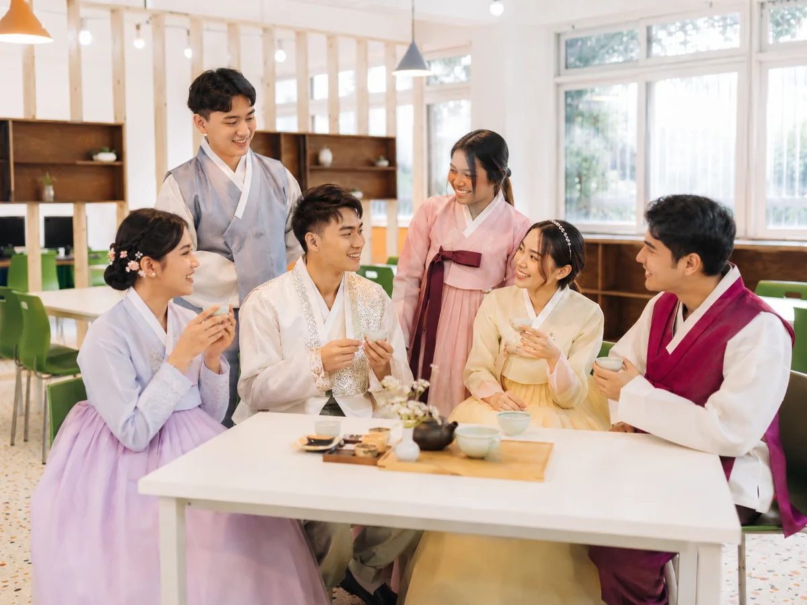
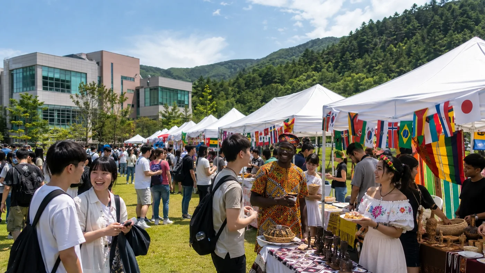

Korean Culture Experience
Once a month, experience Korean culture first-hand on campus.
Alongside Korean classes, students learn about Korea hands-on through activities such as wearing hanbok, cooking traditional food and experiencing seasonal holidays. It is a chance to pick up Korean and everyday life outside the classroom, held once a month.

Hanbok Experience
Try on traditional hanbok and learn about Korean etiquette and culture.
Traditional Cooking
Make Korean dishes such as songpyeon and kimchi together while experiencing seasonal and holiday traditions.
Korean Speaking
Speaking and presentation activities that put what you have learned into practice.
Cultural Excursions
Visit nearby landmarks such as Wolchulsan in Yeongam and experience the local culture.
International Events
Once each semester (twice a year), students of many nationalities come together.
We run exchange events such as the World Culture Festival and Global Friendship Day, where Korean and international students share their cultures, along with community volunteer activities, once each semester (twice a year).

World Culture Festival · Booths introducing each country’s culture and food
World Culture Festival
A festival where students from many countries introduce their culture and celebrate together.
Global Friendship Day
A day for Korean and international students to mingle and make friends.
Community Volunteering
Join volunteer work across Yeongam and Jeonnam, putting sharing and community values into practice.